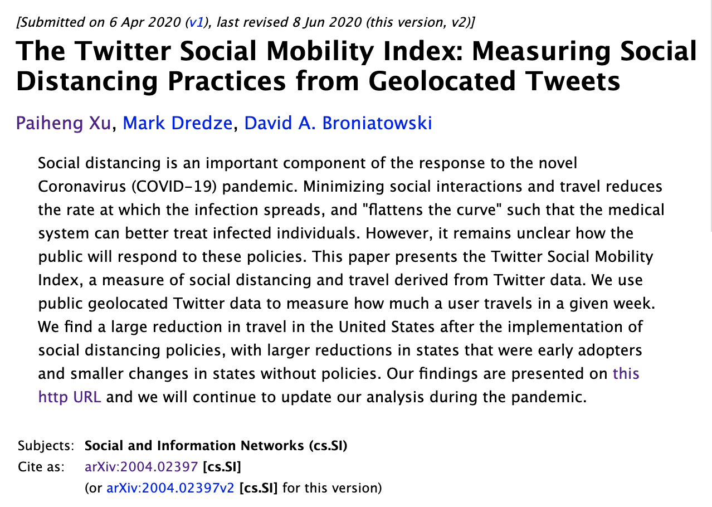

Social Mobility Reduction Data
TEMP: write something about the paper:

We release the raw numbers behind our analysis. For each data release we will post two files:
Excel/CSV containing measurements by US state
This file contains the current social mobility index for each US state and territory. The columns are:
- location The US state or territory and the US as a whole. We include some cities and will add new ones over time.
- mobility_before_distancing The social mobility index for the entire time period of the dataset, from January 1, 2019 up to the date before social distancing, March 15, 2020.
- mobility_after_distancing The social mobility index since March 16, 2020. Note that social distancing started at different times for different states, but we don't include that analysis in this data.
- reduction The percent reduction of social mobility. This is computed as
1 - mobility_after_distancing / mobility_before_distancing.
- num_users The number of unique Twitter users that were used to compute this row.
- num_records The number of unique tweets used to compute this row.
Longitudinal data with weekly measurements by US state
This file contains the social mobility index for every location for each week starting in January 1, 2019.